Turn a screenshot into a design system.
Copy That looks at any picture of a user interface and reads off its colors, type, spacing, and shadows — then hands them back as clean, ready-to-use design tokens.
Every interface is built from small, repeatable decisions — which blue, how much space, which typeface, how heavy a shadow. Designers call these decisions tokens, and normally someone finds them by hand: zooming into a screenshot, guessing at hex codes, eyeballing padding. Copy That automates that guesswork. Feed it an image — a screenshot, a mockup, even an AI-generated concept — and it reads the picture the way a careful designer would, then writes down what it finds in a standard, portable format any tool can understand.
How it works
Drop in an image
Upload a screenshot, mockup, or AI-generated interface — no source files needed.
It reads the design
Computer vision maps the colors, type, and layout; an AI model interprets what it sees and names things the way a designer would.
Get usable tokens
Results stream back as a clean set of design tokens in the official W3C format, ready to drop into your own design system.
Generate ready-made UI
Turn those tokens into working screens — apps, websites, prototypes, game interfaces, even plugin GUIs — all built from the same style guide.
Four real inputs, not clean screenshots
Hand-painted synth panels, dense with illustration — nothing like a typical UI mockup.
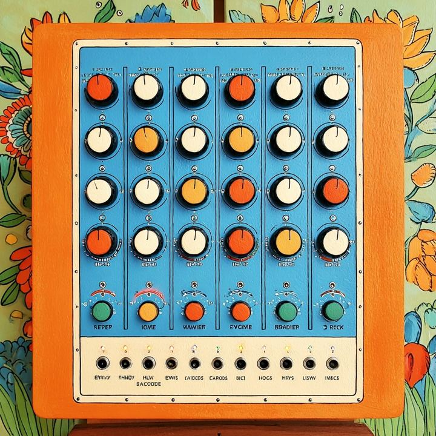
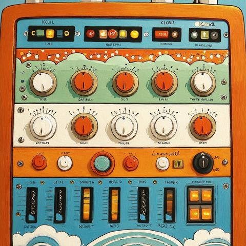
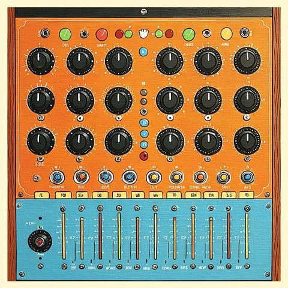
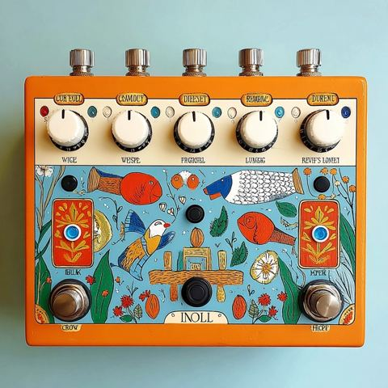
It reads more than colors
Layout, materials, even the language of the controls — this is the kind of detail a real style guide needs.
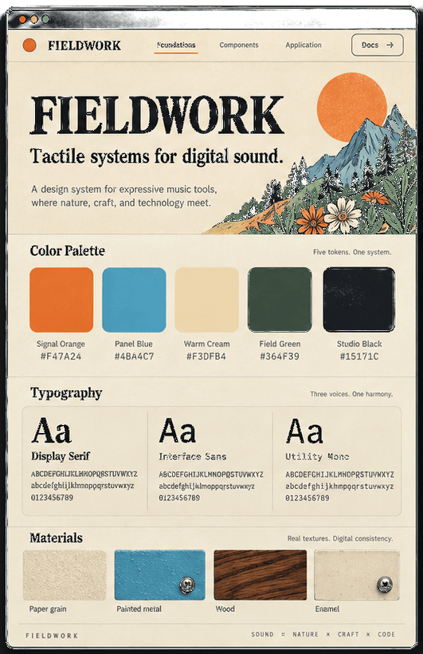
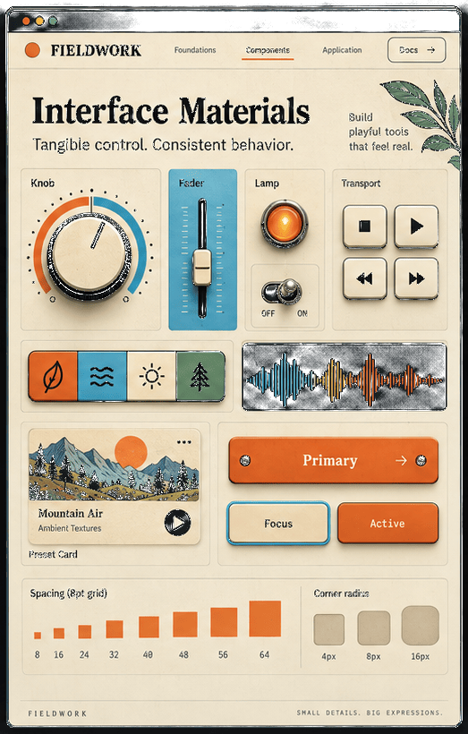
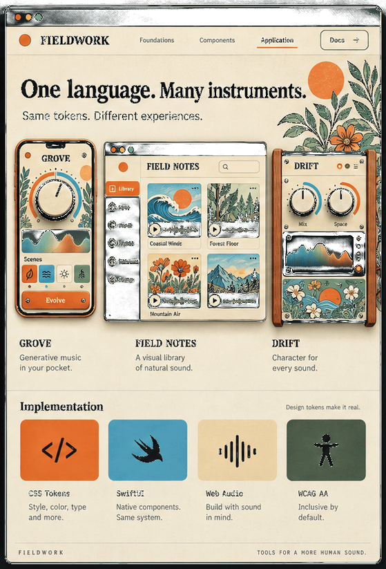
A complete style guide, not just five colors
Here's what comes out of one of them — everything downstream pulls from these three sheets.
Then it builds with it
That style guide becomes the seed for a real interface — apps, websites, prototypes, game screens, plugin UIs — all speaking the same visual language.
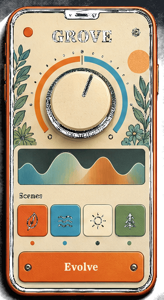
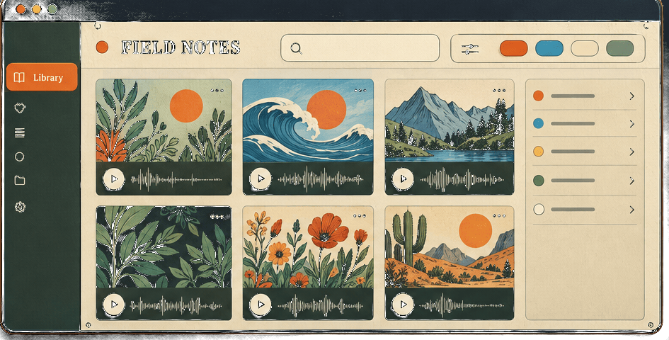
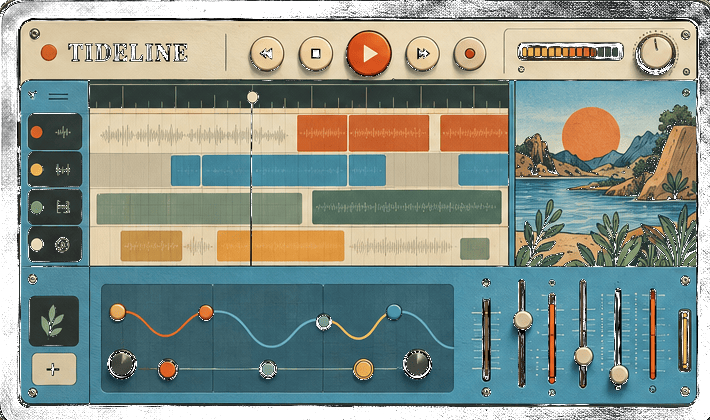
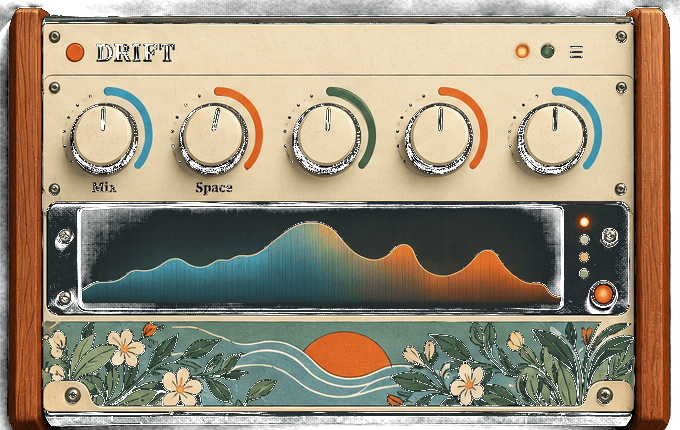
Under the hood, Copy That pairs a Python engine with a live web interface, and every extraction runs against an automated test suite before it ships — so the tokens it hands you are ones you can actually trust.